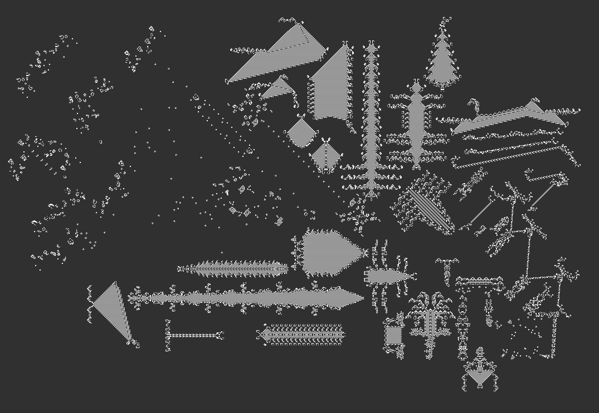

- -->
Diversity in Life
Diversity in Life

A screenshot of the file `cambrian_explosion.rle` in Golly (version 2.8)
- The conwaylife.com wiki reports 3,703 distinct still lifes and 95 distinct oscillators and spaceships in a 2004 census by Achim Flammenkamp
- ... and 8,476 distinct still lifes and 184 distinct oscillators and spaceships (e.g. gliders) from a 2008 census by Andrzej Okrasinski
- A capacity for diverse patterns provided ample material for a rapid technological trajectory from the reflex glider (~1970) to universal emulation (2000s-2010s)